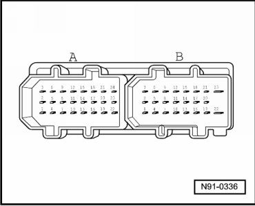

Multi-Pin Connector A, 24-Pin on "Sound 2" System
Connectors on "Sound 1" and "Sound 2" System
Multi-pin Connector A, 24-pin on "Sound 2" System

1 Center speaker, positive
2 Center speaker, negative
3 not used
4 Right rear mid-range speaker, negative
5 Right rear mid-range speaker, positive
6 not used
7 Left rear mid-range speaker, negative
8 Left rear bass mid-range speaker, positive
9 Left front mid-range speaker, negative
10 Left audio signal input, positive
11 Right audio signal input, positive
12 Left front mid-range speaker, positive
13 Left and right audio signal input, negative
14 Navigation audio input, negative
15 Right front mid-range speaker, negative
16 CAN bus High
17 Navigation audio input, positive
18 Right front mid-range speaker, positive
19 CAN bus Low
20 not used
21 Left front treble speaker, positive
22 Right rear bass speaker, negative
23 Right front treble speaker, positive
24 Left front treble speaker, negative